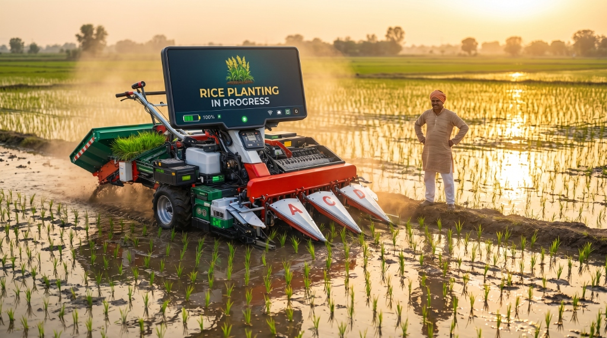
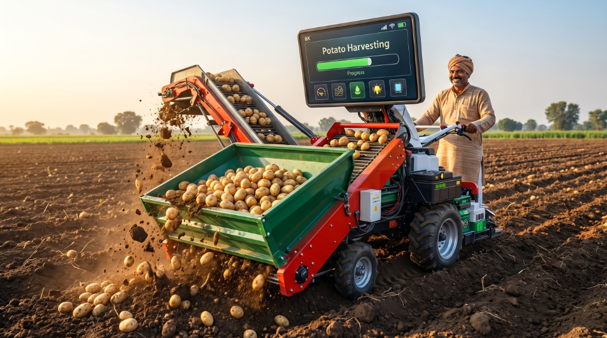
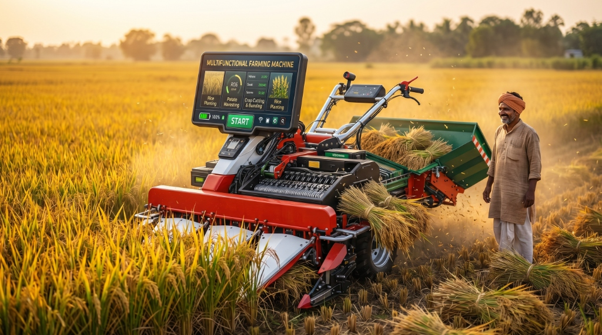

Task-First Design
Select your operation and hit START — no menus to dig through, no confusion under pressure.
A single touch-screen interface orchestrating multiple farm operations — AI-generated, precisely designed, ready for the field.

Built for real-world field conditions with a task-first, accessible interface that adapts to every operator.
Select your operation and hit START — no menus to dig through, no confusion under pressure.
Switch between Potato Planting, Harvesting, Crop Cutting & Bundling, and Rice Planting seamlessly.
High-contrast UI, massive tap targets, and simple icons readable in direct sunlight and dusty conditions.
Battery, fuel, and operational indicators always visible at a glance — no buried sub-menus.
Mode selection + confirmation flow prevents running the wrong operation in critical moments.
Track tasks, switch modes at the right time, and keep field operations consistent and productive.
Generated using advanced AI pipelines — image, video, and 3D all from a single concept brief.
1024 × 1024 · Concept Generation
MP4 · Neural Generation

PNG · 3D Generation

PNG · 3D Generation

PNG · 3D Generation
← Drag or swipe to browse →
High-resolution AI-generated image — the machine in its natural field environment.
Neural image-to-video generation — the concept brought to life in motion.
AI-generated 3D render — face-on perspective of the machine chassis.
Dynamic 45° perspective showcasing the machine depth and form.
Macro view of the touch-screen dashboard and control interface.

AI-generated concept of the machine in rice planting mode.

The machine configured for potato harvesting, demonstrating modularity.

Corn harvesting attachment in action during the harvest season.
Every design decision traces back to a real-world constraint — sunlight, dust, gloves, urgency, and the cost of a wrong button press.
View All Features